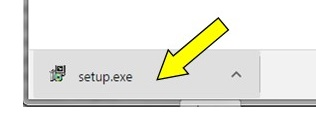
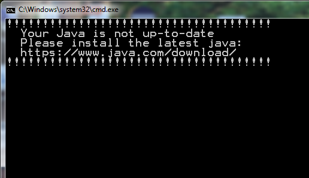
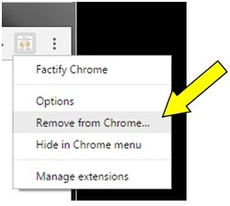

1. Download has started. This will take a few minutes.
2. After download is complete, click on setup.exe to install Factify.
(If it doesn't start, please click
here
.)

Factify will
locally
extract facts from an academic PDF.
(You may need to approve security settings.)
(You may need to install Java 8)

3. Click links for demo
Sample1
Sample2
Uninstalling Chrome
Right-click on FactPub icon at the top of the browser window.
